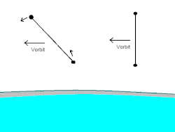

Skyhook (structure)
{kind=link}

A skyhook is a proposed momentum exchange tether that aims to reduce the cost of placing payloads into low Earth orbit. A heavy orbiting station is connected to a cable which extends down towards the upper atmosphere. Payloads, which are much lighter than the station, are hooked to the end of the cable as it passes, and are then flung into orbit by rotation of the cable around the center of mass. The station can then be reboosted to its original altitude by electromagnetic propulsion, rocket propulsion, or by deorbiting another object with the same kinetic energy as transferred to the payload.
A skyhook differs from a geostationary orbit space elevator in that a skyhook would be much shorter and would not come in contact with the surface of the Earth. A skyhook would require a suborbital launch vehicle to reach its lower end, while a space elevator would not.
History
[edit]Different synchronous non-rotating orbiting skyhook concepts and versions have been proposed, starting with Isaacs in 1966,[1][2] Artsutanov in 1967,[3][4] Pearson[5] and Colombo in 1975,[6] Kalaghan in 1978,[7] and Braginski in 1985.[8] The versions with the best potential involve a much shorter tether in low Earth orbit, which rotates in its orbital plane and whose ends brush the upper Earth atmosphere, with the rotational motion cancelling the orbital motion at ground level. These "rotating" skyhook versions were proposed by Moravec in 1976,[9][10] and Sarmont in 1994.[11][12]
This resulted in a Shuttle-based tether system: the TSS-1R mission, launched 22 February 1996 on STS-75 that focused in characterizing basic space tether behavior and space plasma physics.[13] The Italian satellite was deployed to a distance of 19.7 km (12.2 mi) from the Space Shuttle.[13]
Sarmont theorized in 1994 that the skyhook could be cost competitive with what is realistically thought to be achievable using a space elevator.[11]
In 2000 and 2001, Boeing Phantom Works, with a grant from NASA Institute for Advanced Concepts, performed a detailed study of the engineering and commercial feasibility of various skyhook designs. They studied in detail a specific variant of this concept, called "Hypersonic Airplane Space Tether Orbital Launch System" or HASTOL. This design called for a hypersonic ramjet or scramjet aircraft to intercept a rotating hook while flying at Mach 10.[14]
In 2007, a student-built satellite called Young Engineers' Satellite 2 (YES2), part of ESA's Foton-M3 microgravity mission, deployed a 31.7 km tether. This was the longest tether ever deployed in space and officially set the Guinness world record.[15]
While no skyhook has yet been built, there have been flight experiments exploring various aspects of the space tether concept in general.[16]
Rotating skyhook
[edit]{kind=link}
By rotating the tether around the orbiting center of mass in a direction opposite to the orbital motion, the speed of the hook relative to the ground can be reduced. This reduces the required strength of the tether, and makes coupling easier.
The rotation of the tether can be made to exactly match the orbital speed (around 7–8 km/s). In this configuration, the hook would trace out a path similar to a cardioid. From the point of view of the ground, the hook would appear to descend almost vertically, come to a halt, and then ascend again. This configuration minimises aerodynamic drag, and thus allows the hook to descend deep into the atmosphere.[1][16] However, according to the HASTOL study, a skyhook of this kind in Earth orbit would require a very large counterweight, on the order of 1000–2000 times the mass of the payload, and the tether would need to be mechanically reeled in after collecting each payload in order to maintain synchronization between the tether rotation and its orbit.[14]
Phase I of Boeing's Hypersonic Airplane Space Tether Orbital Launch (HASTOL) study, published in 2000, proposed a 600 km-long tether, in an equatorial orbit at 610–700 km altitude, rotating with a tip speed of 3.5 km/s. This would give the tip a ground speed of 3.6 km/s (Mach 10), which would be matched by a hypersonic airplane carrying the payload module, with transfer at an altitude of 100 km. The tether would be made of existing commercially available materials: mostly Spectra 2000 (a kind of ultra-high-molecular-weight polyethylene), except for the outer 20 km which would be made of heat-resistant Zylon PBO. With a nominal payload mass of 14 tonnes, the Spectra/Zylon tether would weigh 1300 tonnes, or 90 times the mass of the payload. The authors stated:
The primary message we want to leave with the Reader is: "We don't need magic materials like 'Buckminster-Fuller-carbon-nanotubes' to make the space tether facility for a HASTOL system. Existing materials will do."[14]
The second phase of the HASTOL study, published in 2001, proposed increasing the intercept airspeed to Mach 15–17, and increasing the intercept altitude to 150 km, which would reduce the necessary tether mass by a factor of three. The higher speed would be achieved by using a reusable rocket stage instead of a purely air-breathing aircraft. The study concluded that although there are no "fundamental technical show-stoppers", substantial improvement in technology would be needed. In particular, there was concern that a bare Spectra 2000 tether would be rapidly eroded by atomic oxygen; this component was given a technology readiness level of 2.[17]